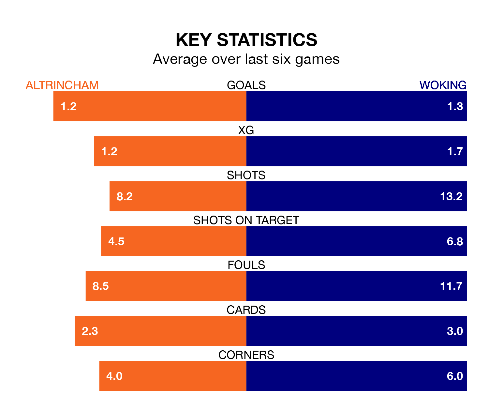

Altrincham are on a poor run ahead of hosting Woking at the J. Davidson Stadium on Saturday, with just three points collected from their last six games.
Robins have picked up just one win in their last six National League games, and face a Cardinals side whose last six games have brought two wins and two draws.
With 39 goals in 37 games so far this season, Woking are the league's joint-third-lowest scorers with 1.1 goals per game. But they are conceding fewer than average too, letting in 47 goals at a rate of 1.3 per game.
Altrincham, meanwhile, are above average scorers, with 1.8 goals per game, compared to a league average of 1.5. They have conceded 1.4 goals per game.
In the last 10 years, Altrincham and Woking have played each other on 11 occasions. They won four each, and they drew three times.
On average, Robins scored 1.5 goals and the Cardinals 1.6 in those matches.
Their last meeting was on August 12, when Altrincham won 3-2 away.
The Cardinals are 20th in the table after 37 games, of which they have won 11 and drawn eight, earning 41 points.
Robins are 11 places ahead of the away side in ninth, with 15 wins and 10 draws putting them on 55 points.
Altrincham's last match was on Tuesday, a 2-1 win against Dorking Wanderers, with Matthew Kosylo and Regan Linney getting the goals for Robins.
Woking beat Kidderminster Harriers 2-1 last time out, also on Tuesday, with Charley Kendall and Curtis Edwards on the scoresheet.
Updated: 09:34 (UTC), 08/03/24